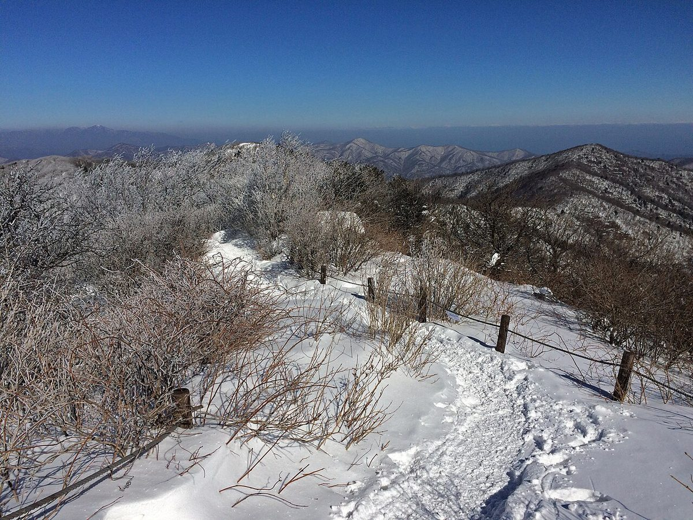
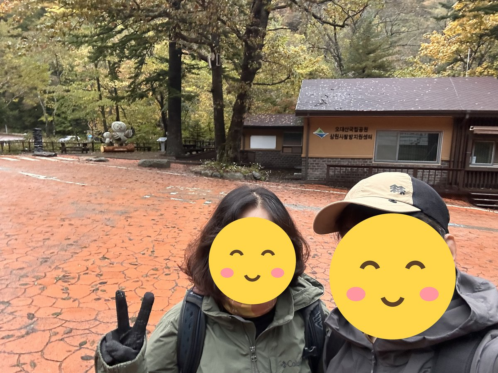
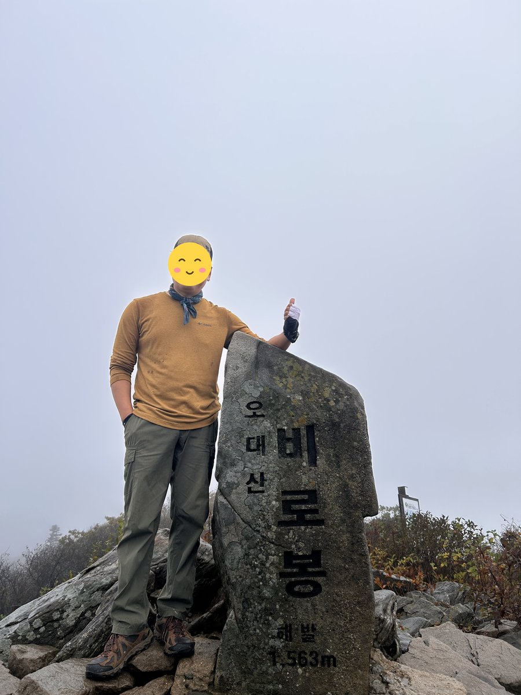
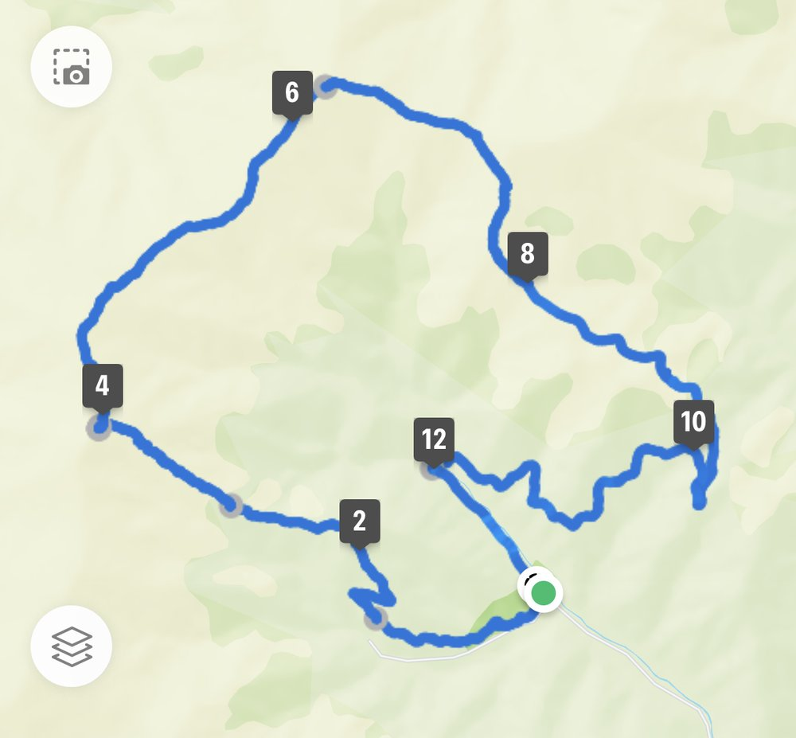

오대산 비로봉은 100대 명산 중 높이 대비 부담이 가장 적은 산으로 꼽힙니다. 상원사 주차장이 이미 높은 고도에 있어 정상까지 3.4km, 1시간 40분이면 닿습니다.
초반 중대사·적멸보궁까지는 산책로에 가깝습니다. 그 뒤로 정상까지가 계단 오르막인데 길이가 짧아 부담이 크지 않습니다. 1500m급을 처음 경험하기에 적당한 산입니다.
월정사에서 상원사까지 이어지는 선재길은 산행과 별개로 걸어볼 만합니다. 전나무 숲길과 계곡을 따라가는 평지 트레킹이라 하산 후 시간이 남으면 함께 묶는 사람이 많습니다.
등반기록
상원사탐방지원센터 → 상원사 → 중대사 → 적멸보궁 → 비로봉(정상) → 상왕봉 → 두로령 갈림길 → 북대사 → 임도 → 상원사탐방지원센터
상원사탐방지원센터에서 출발
아침 6시 38분, 상원사탐방지원센터에서 출발.
코스: 상원사탐방지원센터 → 상원사 → 중대사 → 적멸보궁 → 비로봉(정상) → 상왕봉 → 두로령 갈림길 → 북대사 → 임도 → 상원사탐방지원센터. (출발지 외의 지점은 GPS 기록으로 추정한 것임)

오대산 정상, 비로봉 1,563m
8시 58분쯤 정상 비로봉에 도착. 출발한 지 2시간 20분 만임.
날씨가 흐리고 비가 와서 주변 경치가 전혀 보이지 않아 많이 아쉬웠던 산행.

상왕봉을 돌아 임도로 하산
비로봉에서 능선을 따라 북쪽으로 걸어 9시 36분쯤 상왕봉을 지났고, 두로령 갈림길에서 북대사 쪽으로 내려와 임도를 따라 상원사탐방지원센터로 돌아옴. 12시 32분 종료, 총 12.7km, 5시간 54분이 걸림.

이 산의 포인트
- 비로봉(1563m) — 오대산 최고봉
- 적멸보궁 — 진신사리를 모신 오대 적멸보궁 중 하나
- 월정사 전나무 숲길과 선재길
- 짧은 거리로 1500m급을 오를 수 있는 드문 코스
등산 코스
| 코스 | 거리 | 소요 | 난이도 |
|---|---|---|---|
| 상원사 왕복 (대표) 상원사 주차장 → 중대사 → 적멸보궁 → 비로봉 → 원점 |
약 6.8km | 3시간 30분 | 중 |
| 상원사 → 비로봉 → 상왕봉 순환 상원사 → 비로봉 → 상왕봉 → 북대사 → 상원사 |
약 10km | 5시간 내외 | 중 |
| 선재길 트레킹 월정사 → 선재길 → 상원사 |
약 9km | 3시간 | 하 |
인증장소
비로봉 정상석 앞에서 인증합니다. 노인봉은 같은 오대산국립공원 안이지만 100대 명산 목록에서 별개 항목이므로 따로 다녀와야 합니다.
가는 길
- 자가용
- 상원사 주차장까지 포장도로로 접근할 수 있습니다. 성수기에는 진입 통제나 셔틀 운행을 안내하기도 합니다.
- 대중교통
- 진부시외버스터미널에서 월정사·상원사행 버스를 이용합니다.
주차장
- 상원사 주차장강원 평창군 진부면 동산리
비로봉 최단 코스(왕복 약 3시간)의 들머리입니다. 월정사에서 상원사까지 비포장 임도를 차로 올라야 합니다.
- 월정사 주차장강원 평창군 진부면 동산리
전나무숲길을 함께 걸을 때 이용합니다. 상원사 주차장이 찼을 때의 대안이기도 합니다.
주차 요금과 면수는 자주 바뀌고 성수기에는 임시 주차장·셔틀이 운영되기도 합니다. 출발 전에 지도 앱이나 공원 사무소로 한 번 더 확인하세요.
맛집
평창 진부는 곤드레밥과 한우의 고장입니다. 오대산 아래에서는 능이백숙과 산채정식을, 월정사 입구에서는 감자옹심이와 메밀전병을 냅니다.
- 오대산가마솥식당들머리에서 8.4km강원특별자치도 평창군 진부면 오대산로 152
- 육칼밥 산아래들머리에서 8.4km강원특별자치도 평창군 진부면 오대산로 152
- 동대산식당들머리에서 8.4km강원특별자치도 평창군 진부면 오대산로 152
- 오대산비로봉식당들머리에서 9.0km강원특별자치도 평창군 진부면 오대산로 90
- 오대산서울식당들머리에서 9.0km강원특별자치도 평창군 진부면 오대산로 83
한국관광공사에 등록된 음식점입니다. 맛집 순위가 아니며, 영업시간과 휴무일은 바뀔 수 있으니 먼 길이라면 미리 전화해 보세요.
언제 가면 좋은가
가을 단풍이 뛰어나고 겨울에는 상고대가 자주 맺힙니다. 정상부는 나무가 낮아 바람이 강하니 계절과 무관하게 바람막이를 준비하세요.
알아두면 좋은 것
- 적멸보궁은 사찰 공간이므로 조용히 통과하세요.
- 짧은 코스라 노인봉이나 선재길과 묶어 하루를 채우기 좋습니다.
- 겨울 상고대 확률이 높은 편이라 눈 산행 입문지로 적당합니다.